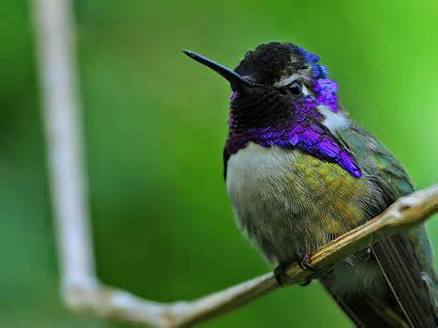

Colibri (Trochilinae)

Colibri es un género de aves apodiformes pertenecientes a la subfamilia de los troquilinos (Trochilinae) y llamadas comúnmente colibríes. Son pequeñas aves nativas de México, América Central y la parte norte de Sudamérica. El género agrupa cuatro especies reconocidas.
Las especies que forman el género Colibri tienen un tamaño que oscila entre 11 y 15 cm, y un peso de 6 a 8,5 g. Tienen cola amplia y redondeada, y pico negro y delgado, relativamente largo.
El plumaje de tres de las cuatro especies es principalmente verde. Los machos tienen una mancha violeta-azul corriendo hacia atrás y abajo del ojo (cuyas plumas se levantan cuando están excitados) y un parche brillante sobre la garganta. El plumaje de las hembras se parece al de los machos, pero los parches del oído y de la garganta son más pequeños.
Especies
- Colibri coruscans
- Colibri delphinae
- Colibri serrirostris
- Colibri thalassinus
Taxonomía
| Dominio: | Eukaryota |
|---|---|
| Reino: | Animalia |
| Filo: | Chordata |
| Subfilo: | Vertebrata |
| Clase: | Aves |
| Orden: | Apodiformes |
| Familia: | Trochilidae |
Fetornitinos (Phaethornithinae)
Los fetornitinos (Phaethornithinae) son una subfamilia de aves apodiformes de la familia Trochilidae conocidas vulgarmente como ermitaños. Los ermitaños junto la subfamilia Trochilinae conforman la familia Trochilidae que agrupa a lo colibríes. El grupo comprende aproximadamente 34 especies en seis géneros.
Características
Las especies de aves de Phaethornithinae tienen los tres dedos delanteros pegados en la base. También poseen plumas de dirección (timoneras centrales) extremadamente alargadas. En cambio, los [Florisuginae] y [Trochilinae], tienen dedos separados y las plumas de la cola (timoneras centrales) no alargadas.
Los ermitaños presentan colores verdes, castaños, típicamente rojizos o gris. Les falta el plumaje iridiscente de muchos colibríes, y el plumaje de los machos y hembras son a menudo muy similares (no hay dimorfismo sexual); sólo unas pocas especies muestran el dimorfismo sexual tan frecuente en los colibríes